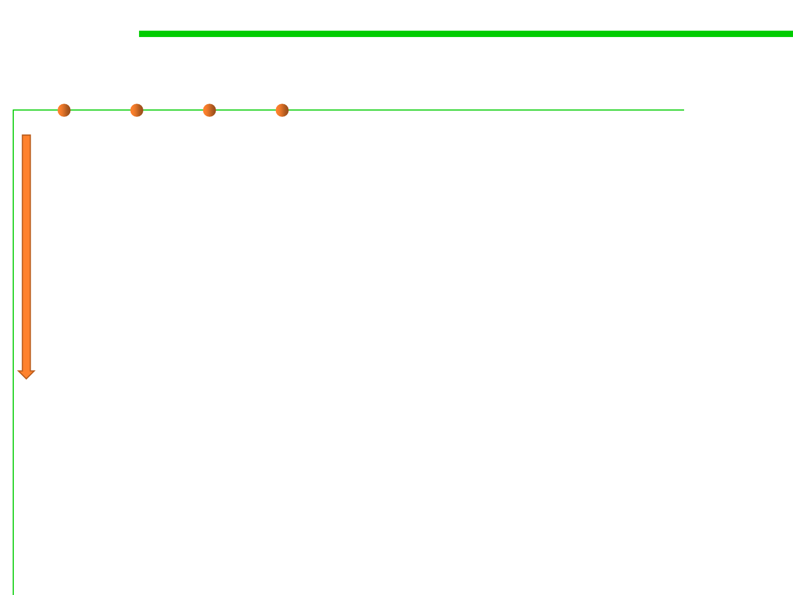

When to Tune
8.3 Code Tuning for Performance Optimization
▪ Use a high-quality design.
▪ Make the program right.
▪ Make it modular and easily modifiable so that it’s easy to work on
later.
▪ When it’s complete and correct, check the performance. If the
program lumbers, make it fast and small.
▪ Don’t optimize until you know you need to.
▪ Jackson’s Rules of Optimization:
– Rule 1. Don’t do it.
– Rule 2 (for experts only). Don’t do it yet— that is, not until you have a
perfectly clear and un-optimized solution.